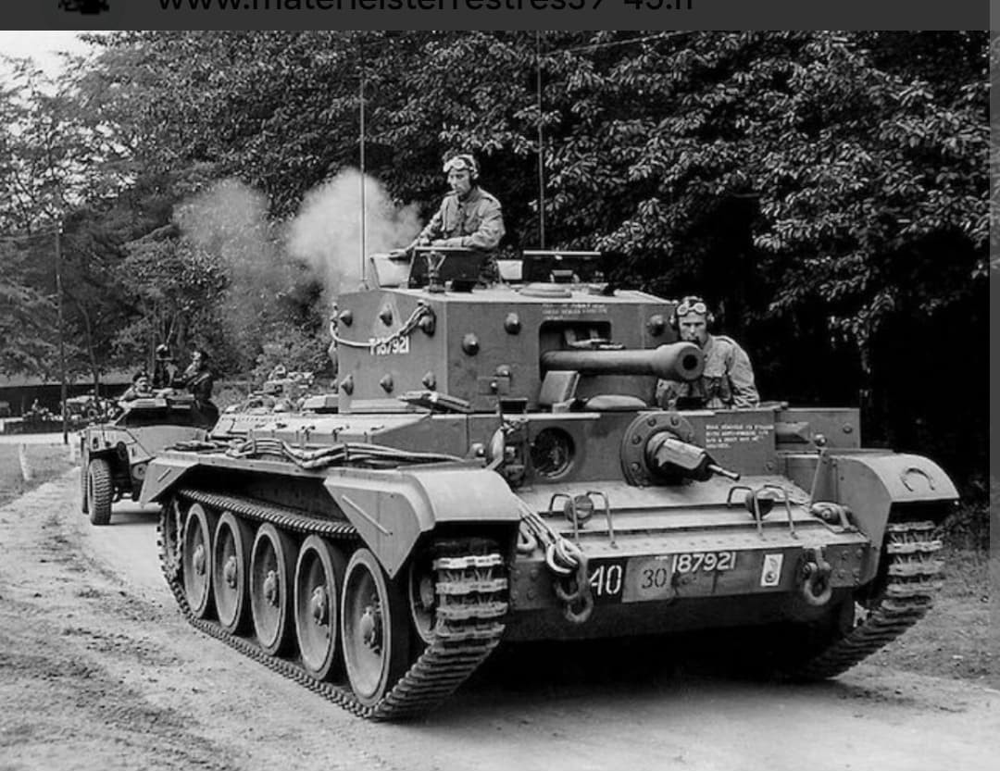
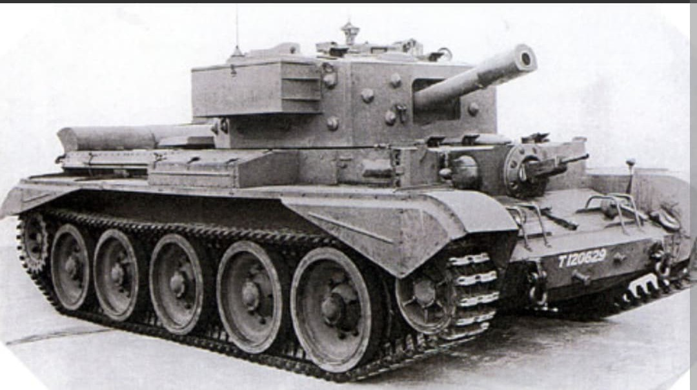
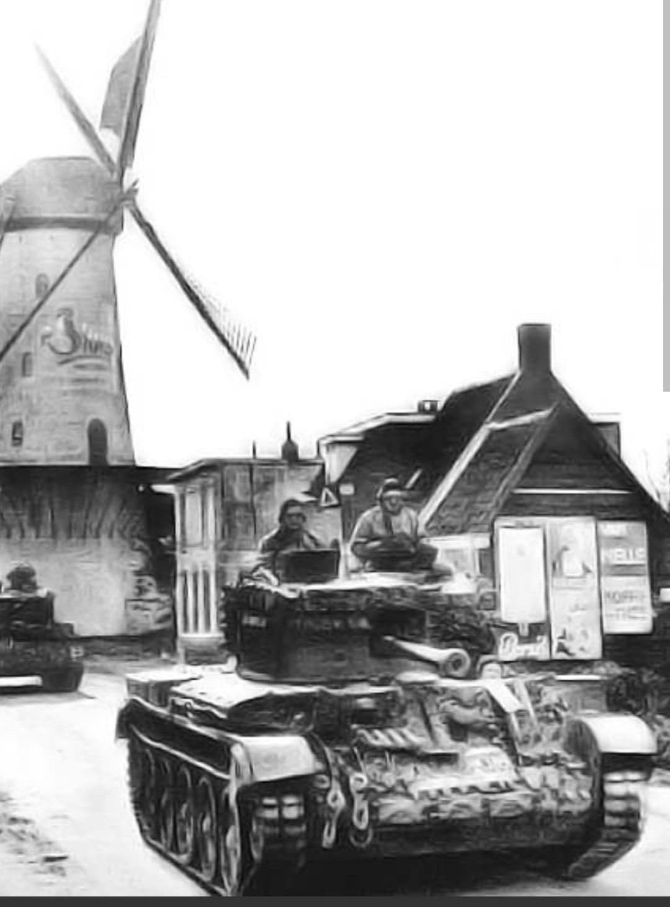

L'un des chars alliés les plus rapides de la Seconde Guerre mondiale grâce à son moteur Rolls-Royce Meteor

Le **Cromwell** (officiellement Cruiser Tank Mk VIII, A27M) est un char de croisière britannique développé pour remplacer le Crusader.
Doté d'une vitesse et d'une agilité exceptionnelles sur le champ de bataille, le Cromwell offrait aux forces blindées britanniques une réponse mobile capable de rivaliser avec la rapidité des divisions panzer allemandes lors de la campagne de libération de l'Europe.
Conçu par la firme **BSR (Birmingham Railway Carriage and Wagon)**, le Cromwell se distingue par son innovation majeure sous le capot : le moteur **Rolls-Royce Meteor**. Dérivé direct du célèbre moteur d'avion *Merlin* (qui propulsait les chasseurs Spitfire et Hurricane), ce bloc V12 à essence développait 600 chevaux.
D'une masse de **28 tonnes**, le Cromwell pouvait atteindre des pointes de **64 km/h sur route**, ce qui en faisait l'un des blindés chenillés les plus rapides de la guerre. Son blindage frontal atteignait **76 mm**, et son armement principal consistait en un canon de **75 mm OQF** (dérivé du 6-pounder) ou un canon de 6 livres selon les versions, offrant un bon équilibre entre tir perforant et soutien d'infanterie.

Le Cromwell fit ses grands débuts opérationnels lors du débarquement de Normandie en juin 1944, équipant principalement les régiments de reconnaissance des divisions blindées britanniques (comme la 7e Division Blindée).
Grâce à sa vitesse fulgurante et à son excellente maniabilité dans les espaces ouverts et les rues de villages normands, il excellait dans les missions de contournement et de harcèlement. En revanche, son blindage vertical et son armement standard restaient limités face aux chars lourds allemands (Tiger et Panther) lors des duels frontaux.

Produit à un peu plus de **4 000 exemplaires**, le Cromwell constitua l'ossature des unités blindées mobiles britanniques jusqu'à la fin du conflit en mai 1945.
Pour combler ses lacunes face aux blindés lourds allemands, son châssis et sa motorisation servirent de base directe au développement du char de croisière lourd **Comet (A34)**, doté d'une tourelle redessinée et d'un canon antichar exceptionnel de 77 mm HV.
Page du Musée HOP WW2 – Section Véhicules Terrestres Britanniques